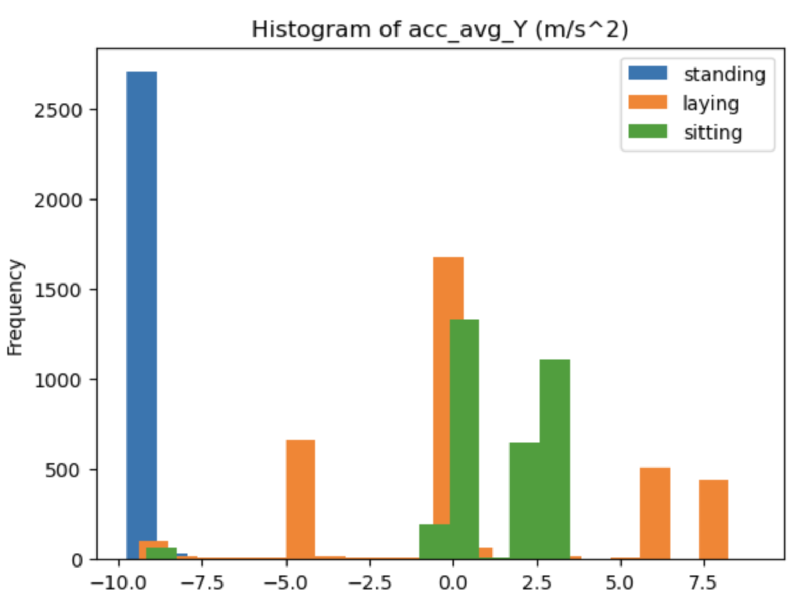
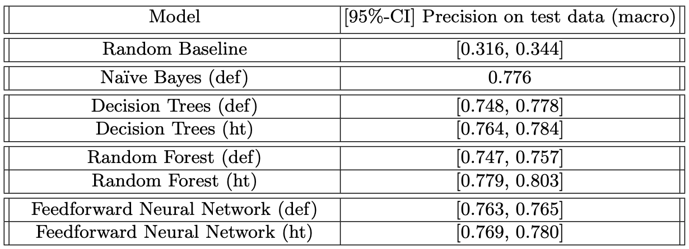
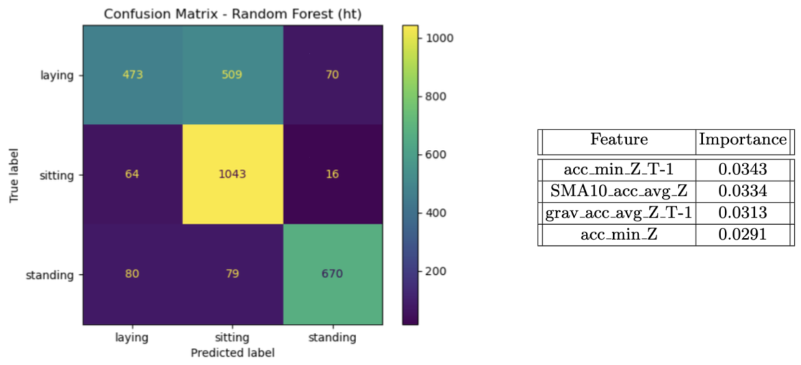

Body posture classification using smartphone sensors
Jun 2023
Length: 2w (at 0.5 FTE)
Programming language: Python (Pandas, NumPy, datetime, RE, seaborn, Matplotlib,
pykalman, random, scikit-learn)
Data:
- measurements from smartphone sensors (Accelerometer, Linear Accelerometer, Gyroscope,
Location (GPS), Magnetometer, Pressure, Proximity) collected over one and a half hours while
the user transitioned between sitting, laying, and standing
- time spent in each posture, information that will be turned into the target variable of the study
Problem description:
Collect sensory data, remove noise, engineer new features, and apply classical Machine Learning
techniques to the resulting dataset
Approach:
After the data was collected and exported from the smartphone, the time series from each sensor
were merged together into a single table, using a timespan of half a second between
measurements. In other words, there are two records for each second of the experiment.
The features tracked by the sensors at a larger frequency were aggregated over the
values recorded in each half-second of the experiment. This was done using each of the
four aggregation functions individually, namely the mean, standard deviation, minimum, and
maximum, resulting in four times as many variables.
Next, the location, proximity, and pressure measurements were removed due
to privacy reasons and because the variables have more than half of their entries missing, respectively.
The distributions of the remained features were then analyzed. First, it was observed that
the target variable is balanced. Secondly, it was noticed that the distributions of some features
divided by label do not overlap, suggesting the respective variables will have a greater
predictive power compared to the ones that do not present this pattern. One example can be
seen in the image below, where the "standing" distribution hardly overlaps the other two.

In order to detect outliers resulted from technical errors, a number of checks were performed
on the range of measurements to see if these were in line with the possible values according
to the laws of physics. However, no value that contradicts the domain knowledge was found.
When it comes to the detection and replacement of variability outliers, the Kalman filter was
used.
At this point, several additional features were derived from the remaining variables,
including the sign of each column, the gravitational acceleration, a sliding window,
and the 10-simple moving average of every variable, excluding the label.
Before modeling, the dataset was divided into the train and test sets using a 70-30% temporal-based
partitioning, maintaining the equal proportions of the label classes and ensuring
no leakage in the test set from the sliding window and simple moving average.
Then, four Machine Learning techniques were applied, namely Naïve Bayes, Decision
Trees, Random Forrest, and Feedforward Neural Network, first in the default configuration and
then using the hyperparameters resulting in the best precision on the validation data after
20 iterations of random search with 5-Cross Validation. Lastly, we refitted the model obtaining
the best score on the validation data on both the train and validation datasets, and used
it to predict the labels for the test set.
When it comes to the Neural Network, the parameters were tuned starting with the
learning rate, as this is the most important one, followed, one-by-one, by the hidden layer size,
activation function, and solver. In order to assess which value led to the best results,
the validation losses were plotted, and the value of the hyperparameter whose Neural
Network resulted in the steepest and lowest-reaching loss curve was selected.
Considering that most models use a seed and their results vary accordingly,
we repeated the fitting process three times and reported the 95% Confidence Interval of the
three precision scores instead of a single value, which allowed for a fair comparison of the
models. Then, we computed a 95% confidence interval for the random baseline, calculated
after randomly sampling the labels for each instance.
Results:
The presented table suggests that the models perform twice as well compared
to the random baseline, with the Random Forest model outperforming the Feedforward
Neural Network by upwards of 3% by scoring a mean precision of 0.792 with 95% confidence
on the hold out-set.

During the error analysis phase, we generated the confusion matrix for the best model. In the image below,
we observe that the Random Forest algorithm often confuses laying with sitting, with 509
instances where it predicted the user was sitting when he/she was laying. Outside this, the model
is remarkably well at classifying the other postures. Lastly, one may notice from the feature
importance table that the model mainly relies on the data measured by the accelerometer sensor.
